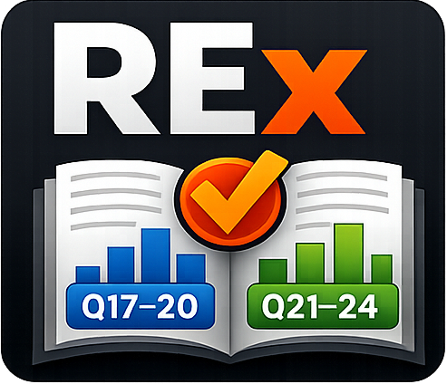
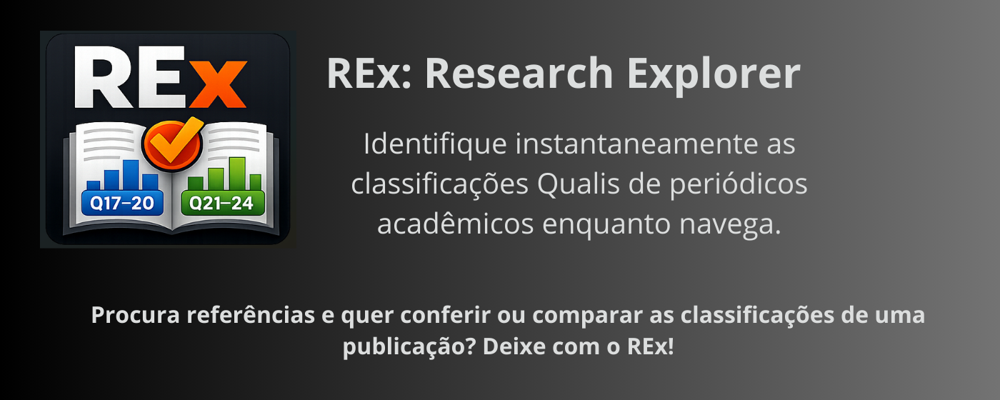
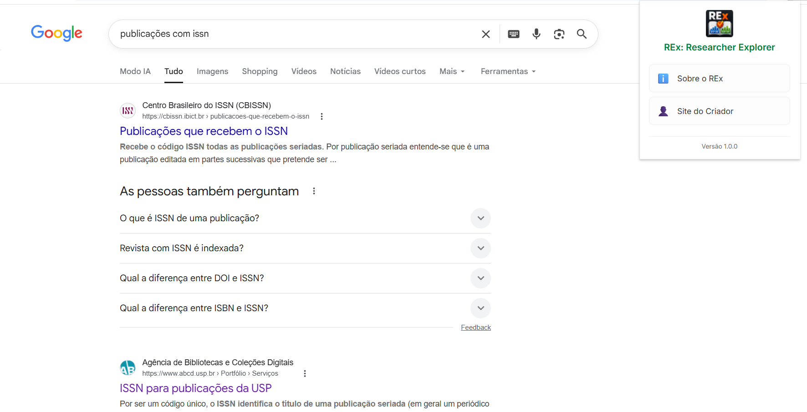
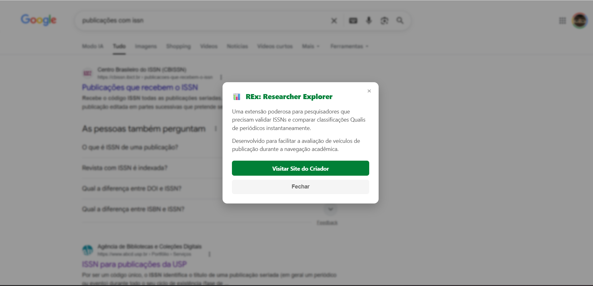
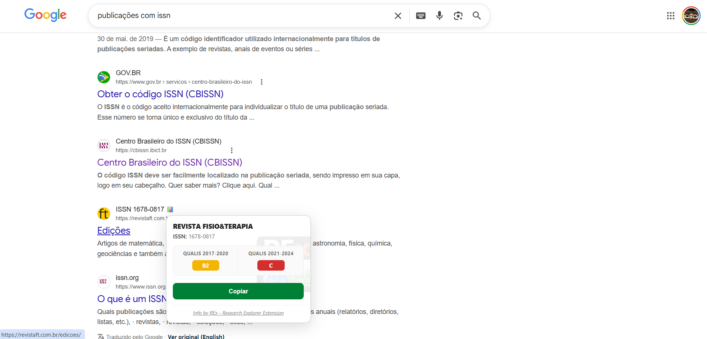

REx: Research Explorer
Facilitando a identificação e comparação de indicadores científicos

💡 O que é o REx?
O REx: Research Explorer é uma extensão desenvolvida para agilizar o fluxo de trabalho de pesquisadores, orientadores e estudantes. Ele identifica automaticamente o ISSN de periódicos em páginas como o Google Acadêmico e outros sites acadêmicos, permitindo visualizar a classificação Qualis CAPES de diferentes quadriênios de forma rápida e comparativa.
🧭 Proposta e Origem
A proposta é agilizar análises relacionadas à escolha de periódicos, avaliação de produção e acompanhamento de indicadores, podendo ser usada em sites ou sistemas institucionais onde apareça o ISSN das publicações.
O projeto surgiu da observação do fluxo de trabalho de pesquisadores em busca de referências qualificadas. Desenvolvido durante o Carnaval, o REx nasceu da vontade de contribuir com uma ferramenta simples, porém poderosa, para a comunidade científica.
🔍 Como funciona?
Instale
Adicione a extensão ao seu navegador (Chrome, Edge ou Firefox).
Navegue
O REx detecta automaticamente ISSNs em qualquer página acadêmica.
Analise
Passe o mouse sobre o ícone do REx para ver os indicadores Qualis.
🎥 Veja o REx em ação
Confira alguns prints de como o REx funciona:



🛡️ Coleta de dados e privacidade
O REx não coleta dado algum. É perfeitamente seguro para uso tanto em páginas públicas quanto em sistemas restritos, uma vez que apenas lê os números ISSN e localiza as ocorrências na sua base interna, que é carregada para o navegador na sua primeira execução.
👥 Quem pode usar o REx?
A ferramenta é direcionada a pesquisadores (discentes, docentes, técnicos e público em geral) e avaliadores de produção científica que buscam otimizar suas análises de indicadores bibliométricos.
🚀 Onde baixar o REx
Baixe o REx para o seu navegador favorito clicando no botão correspondente:
* No Firefox, o nome da extensão é "REx: Researcher Explorer".
📝 Nota do Desenvolvedor
Este é um projeto pessoal, sem vínculo institucional, criado para contribuir com a comunidade científica. Se achar a ferramenta útil, sinta-se à vontade para divulgar aos seus colegas!
Leia o artigo técnico no Medium